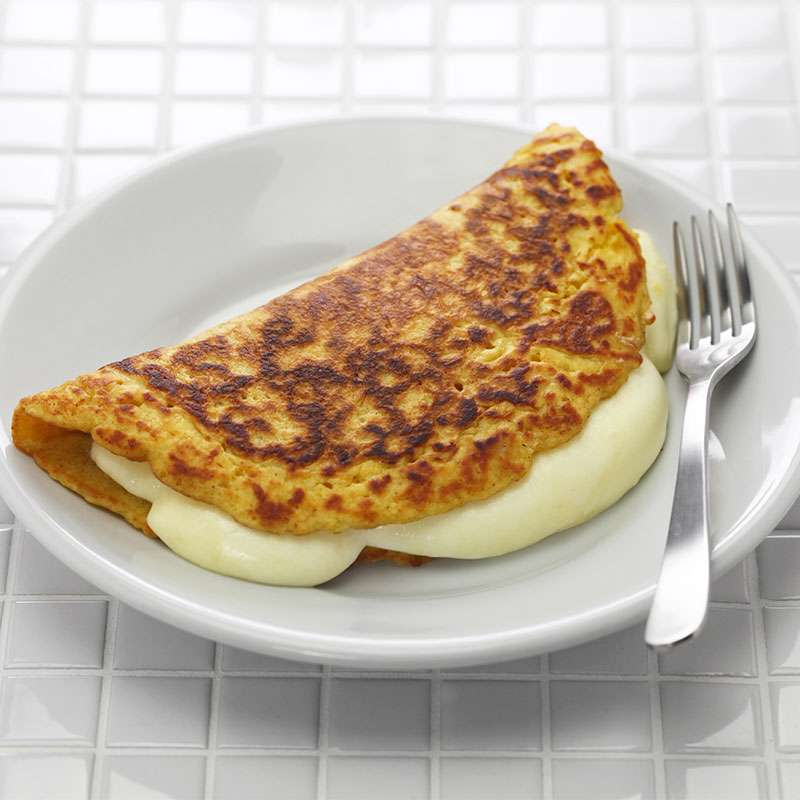

Home
Cachapa

Description
Cachapa is a typical Venezuelan dish made from ground tender corn, which is grilled like a kind of thick pancake. It is sweet and soft,
and is usually served with hand cheese, although it can also be accompanied with other fresh cheeses such as mozzarella or feta cheese.
Ingredients
- 2 (15.25 ounce) cans whole kernel corn, drained
- ¼ cup milk
- 1 egg
- ¼ cup masa harina
- 2 tablespoons white sugar
- ½ teaspoon salt
- 4 tablespoons vegetable oil
Steps
- Blend corn, milk, egg, masa harina, sugar, and salt together in a blender until the mixture has the consistency of pancake batter.
- Heat oil in a a large skillet over medium heat. Add enough batter to form the size of a taco shell, 4 to 5 inches around. Cook until golden brown, about 2 minutes per side. Repeat with remaining batter.